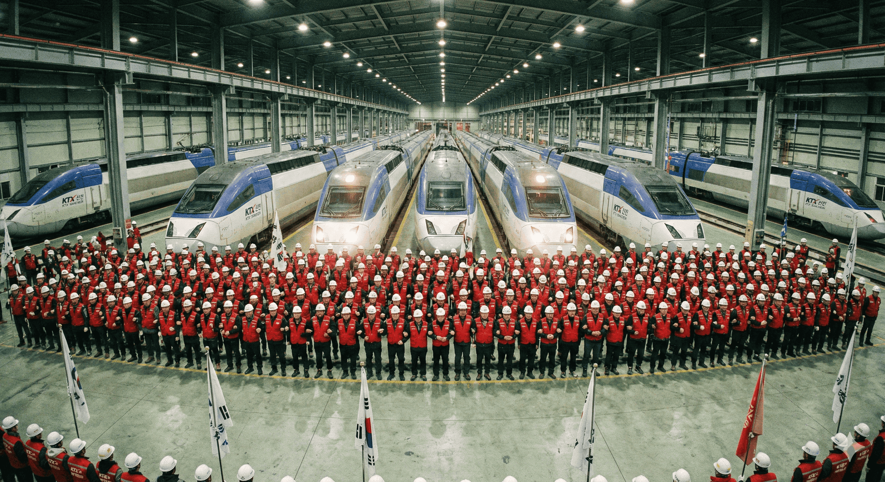

100% 약속을 파기한 기재부의 비겁한 지연 전술, 총력 투쟁으로 응징합시다
우리는 파업을 유보하며 약속을 믿었습니다. 그러나 돌아온 것은 ‘정상화’가 아니라 ‘꼼수’였습니다.
90%는 타협이 아닙니다. 15년 차별을 다른 이름으로 연장하려는, 계획된 후퇴일 뿐입니다.
사랑하는 고양고속차량지부 조합원 동지 여러분!
우리는 지난 12월 10일, 총파업이라는 배수진을 치고 정부를 압박했습니다. 파업 돌입 직전, ‘성과급 100% 정상화’라는 약속을 믿고 우리는 파업을 유보하며 현장을 지켰습니다. 그것은 우리 노동자의 양보이자, 정부에 준 마지막 기회였습니다. 하지만 지금 돌아온 것은 무엇입니까? 기재부의 파렴치한 약속 파기와 90% 꼼수뿐입니다.
기재부의 소름 돋는 ‘시간 벌기’와 ‘기만 행정’을 강력히 규탄합니다.
기재부의 노림수는 명확했습니다. 12월 10일의 파업만 우선 면피해 노동조합의 김을 빼고, 연말이 되어서야 90%라는 꼼수 안을 기습 상정해 쟁점을 시간으로 덮어 버리려 한 것입니다. 특히 연말연시 대목을 맞아 열차를 확대 운행하며 시민들에게 표를 대거 판매해 놓고, 뒤로는 약속을 뒤집는 안을 밀어붙이는 행태는 우리 현장 노동자와 국민 모두를 우롱하는 짓입니다.
고양고속차량지부의 결의가 곧 철도의 안전입니다.
고속열차의 심장부인 우리 고양기지에서 밤낮없이 결함을 잡고 안전을 지키는 우리 동지들은 잘 알고 있습니다. 안전은 ‘말’이 아니라 정당한 조건에서 나옵니다. 노동의 가치를 80%, 90%로 깎아내리며 예산 절감만 외치는 정부의 행정이야말로 철도 안전의 가장 큰 적입니다. 성과급 정상화는 단순히 돈을 더 받는 투쟁이 아니라, 철도 노동자의 존엄과 안전의 기반을 지키는 투쟁입니다.
이제 다시, 멈출 시간입니다.
중앙쟁의대책위원회는 19일 긴급 확대쟁대위를 통해 총파업을 결의하고, 그 자리에서 결정되는 날짜에 맞춰 무기한 총파업에 돌입할 것입니다. 19일 확대쟁대위의 결정에 모두 주목해 주십시오!
운명의 파업일이 선포되는 순간, 고양고속차량지부 전 조합원은 단 한 명의 이탈 없이 거대한 투쟁의 물결에 함께해 주십시오. 우리가 멈추면 세상이 멈추고, 우리가 단결하면 저들의 꼼수는 무너집니다.
“기만적인 90% 안 폐기하고, 100% 정상화 약속 이행하라!”
“기재부의 꼼수 행정, 총파업 투쟁으로 박살 내자!”
2025년 12월 18일
전국철도노동조합 고양고속차량지부